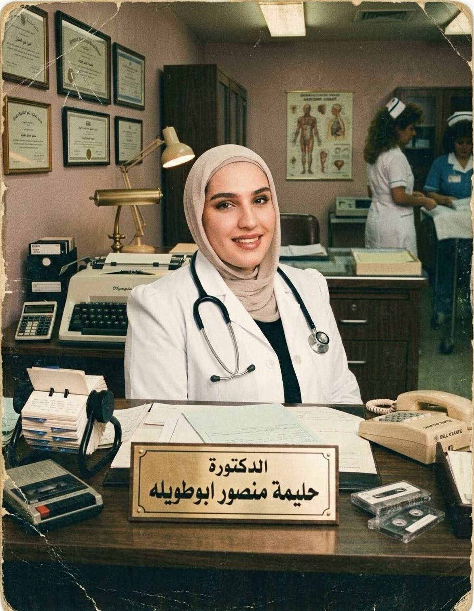
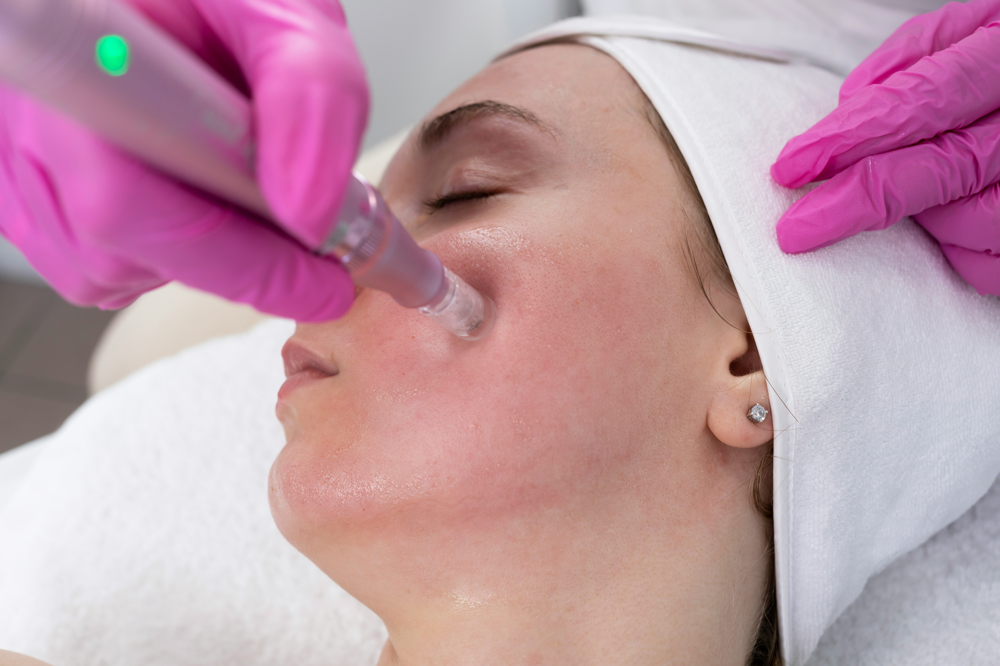
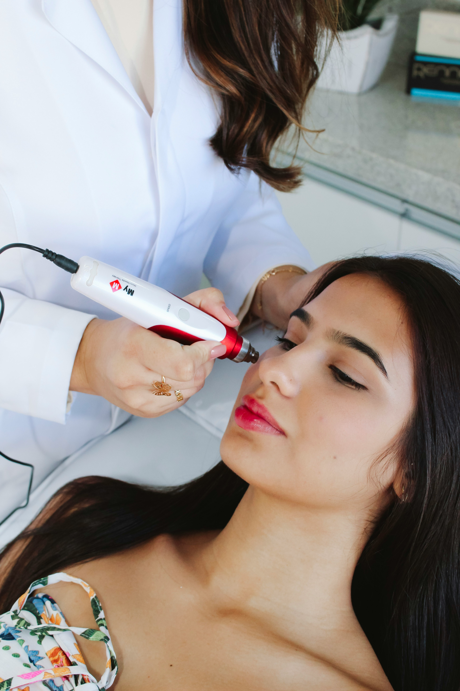

01
رعاية تجميلية شخصية تجمع بين المعرفة الطبية، والذوق الرفيع، والاهتمام بالتفاصيل — لأن أجمل النتائج هي التي تشبهكِ.
كل خطة تبدأ بالاستماع إليكِتقييم فردي · توقعات واقعية · عناية مدروسة

تؤمن الدكتورة حليمة أبو طويليه بأن الطب التجميلي الجيد يبدأ بفهم احتياجات كل شخص، وليس باتباع صيحة عابرة. لذلك تُبنى كل توصية على استشارة واضحة وتقييم فردي وأهداف واقعية.
ابدئي باستشارة شخصية ↗تختلف احتياجات البشرة من شخص لآخر. اكتشفي بعض الخيارات التي يمكن مناقشتها خلال الاستشارة الطبية.


تُحدّد ملاءمة أي إجراء بعد استشارة وتقييم طبي. النتائج والمخاطر وفترة التعافي تختلف حسب الحالة والإجراء.

لا توجد خطة واحدة تناسب الجميع. نبدأ بحوار صريح حول ما تريدينه، ثم نستعرض الخيارات والفوائد والحدود والمخاطر قبل اتخاذ أي قرار.
استمعي واسأليمساحة مريحة لمشاركة أهدافكِ
افهمي الخياراتمعلومات واضحة قبل أي إجراء
قرّري بثقةخطة مناسبة لتقييمكِ الطبي
“الهدف ليس أن تصبحي شخصاً آخر،
بل أن تشعري بالراحة والثقة بنفسكِ.”
تبدأ الخطوة الصحيحة باستشارة وتقييم طبي. لا يمكن تحديد الإجراء الأنسب من الصور وحدها أو دون معرفة التاريخ الطبي واحتياجات البشرة.
لا يمكن ضمان نتيجة محددة؛ فالاستجابة تختلف من شخص لآخر. خلال الاستشارة، تُناقش النتائج المتوقعة والحدود والمخاطر المحتملة.
يمكنكِ التواصل عبر واتساب لطلب موعد أو الاستفسار عن الاستشارة، وسيتم تأكيد التوافر والتفاصيل مباشرةً مع العيادة.
ابدئي بمحادثة بسيطة. شاركينا ما تبحثين عنه، وسنساعدكِ في معرفة الخطوة التالية.
تواصلي مباشرةً عبر واتساب لطلب موعد أو طرح استفساركِ.
تواصلي عبر واتساب ↗+962 77 881 1180سيتم تأكيد الموعد والتفاصيل عند التواصل.